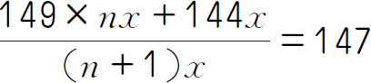
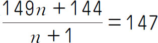
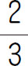

．
．平均数问题是已知几个不相等的数及它们的份数，求总平均值的问题．平均数常常用于在考试成绩、各类竞赛的计算，用平均数还可以表示一组数据的情况，有直观、简明的特点，所以在日常生活中经常用到，如平均速度、平均身高、平均产量等．灵活运用平均数，对于以后的生活有着极大的帮助．
【解题技巧】
对于总量、份数、平均数这三个量，知道其中任意两个量，进而求出未知的第三个量．把几个不相等的数，在总数不变的条件下，通过移多补少，使它们完全相等，求得的数就是平均数．
【基本公式】
总量÷总份数＝平均数
（第五届“走美杯”初赛）有5个数，平均值是100．添上一个数后，平均值增加2，再添上第七个数，平均值又增加2，则第七个数是_____．
【答案】 116．
【解析】 用7个数的总和减去前6个数的和，可得第七个数，（100＋2＋2）×7-（100＋2）×6＝116．
【举一反三1】
有6个数，平均值是80．添上一个数后，平均值增加2，再添上第八个数后，平均值又增加4，则第八个数是_____．
（第三届“希望杯”决赛）在某次测试中，小明、小方和小华三人的平均成绩为85分，已知小明和小方的平均成绩为88分，小明和小华的平均成绩为86分．求：（1）小方和小华的平均成绩；（2）他们三人中的最高成绩．
【答案】 （1）81分．（2）93分．
【解析】 小明、小方和小华三人的总成绩是85×3＝255（分），小明和小方的总成绩是88×2＝176（分），小明和小华的总成绩是86×2＝172（分），所以小方的成绩是255-172＝83（分），小华的成绩是255-176＝79（分），故小方和小华的平均成绩是（83＋79）÷2＝81（分）．（2）由以上可知小明的成绩为255-（79＋83）＝93（分），所以三人的最高成绩是93分．
【举一反三2】
（第二届“希望杯”初赛）小永的三门功课的成绩，如果不算语文，平均分是98分；如果不算数学，平均分是91分；如果不算英语，平均分是91分．小永的三门功课的平均成绩是___分．
（第八届“希望杯”决赛）五年级（1）班男生的平均身高是149厘米，女生的平均身高是144厘米，全班同学的平均身高是147厘米，则五年级（1）班的男生人数是女生人数的___倍．
【答案】 1.5．
【解析】 设女生人数为x 人，男生人数为n x 人，则有

，上下消掉x ，有
，可得n ＝1.5，即1.5倍．【举一反三3】
某班女同学人数是男同学的2倍，如果女同学的平均身高是150厘米，男同学的平均身高是162厘米，那么全班同学的平均身高是_____厘米．
（第十二届“华罗庚金杯”决赛）某班一次数学考试，所有成绩得“优”的同学的平均分数是95分，没有得“优”的同学的平均分数是80分．已知全班同学的平均分数不少于90分，问得“优”的同学占全班同学的比例至少是多少？（用分数形式表达）
【答案】
．
【解析】 为使全班同学的平均分数达到90分，需将2名得“优”的同学和一名没得“优”的同学匹配为一组，即得“优”的同学至少应为没得“优”同学的2倍，才能确保全班同学的平均分不低于90分，所以得“优”的同学占全班同学的比例至少是

．【举一反三4】
前五次考试的总分是428分，第六次至第九次的平均分比前五次的平均分多1.4分．现在要进行第十次考试，要使后五次平均分高于所有十次的平均分.那么第十次至少要考_____分.（每次考试的分数都是整数．）
1．（第八届“走美杯”初赛）一些互不相同的正整数，平均值为100，其中有一个是108，如果去掉108，平均数就变成99，这些数中最大的数是_____．
2．一次数学测试，全班的平均分是91.2分，已知女生有21人，平均每人92分，男生平均每人90.5分，求这个班男生有多少人．
3．五年级（1）班的同学进行数学测试，前五次检测的平均成绩是80分，他若想使成绩再提高一些，那他第六次考多少分才能使这六次的平均成绩达到82分？
4．两组同学跳绳，第一组有25人，平均每人跳80下，第二组有20人，平均每人比两组同学跳的平均数多5下．两组同学平均每人跳多少下？
5．小明去爬山，上山速度为3千米/小时，原路返回的速度是5千米/小时．求小明往返的平均速度．
6．甲地到乙地的全程是120千米.小红骑车从甲地到乙地每小时行30千米，从乙地返回甲地每小时行20千米.求小红往返甲乙两地的平均速度．
7．有四个数，从第二个起，每个数都比前一个数大3，已知这几个数的平均数是24.5，则其中最大的一个数是多少？